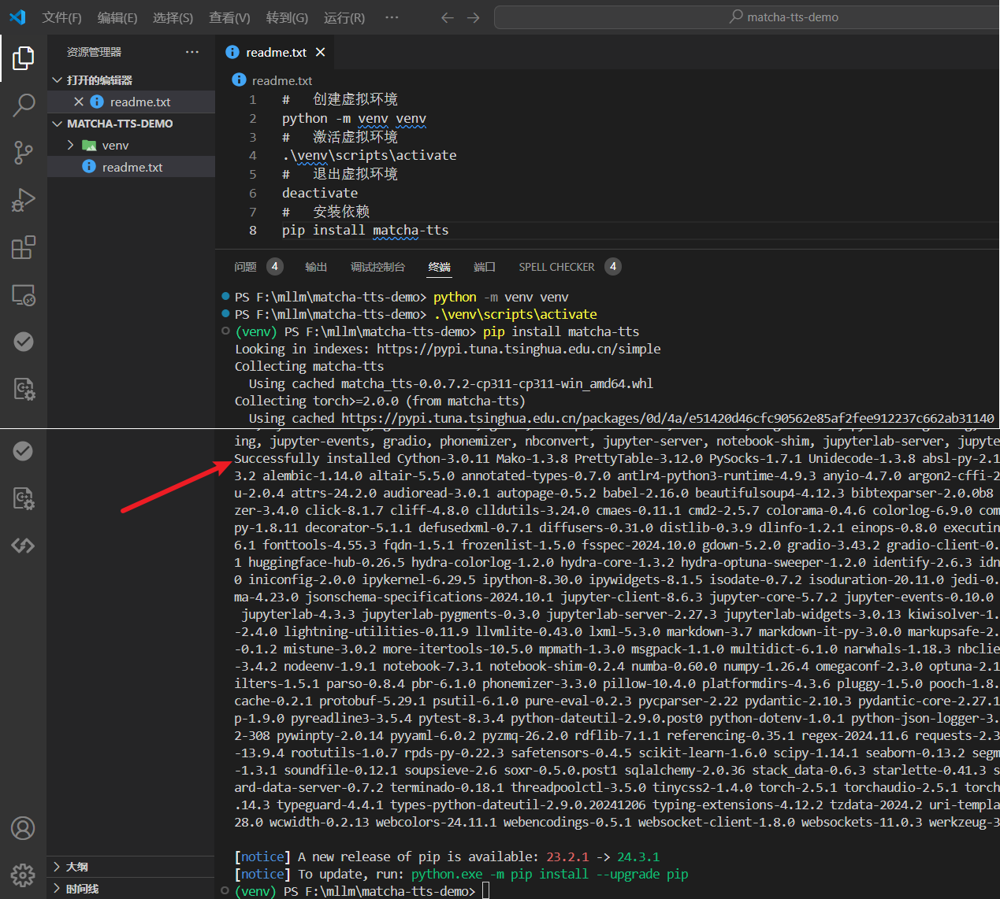
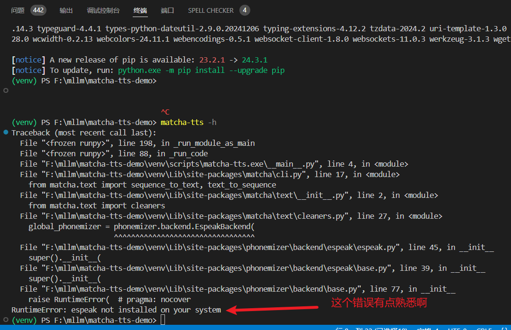
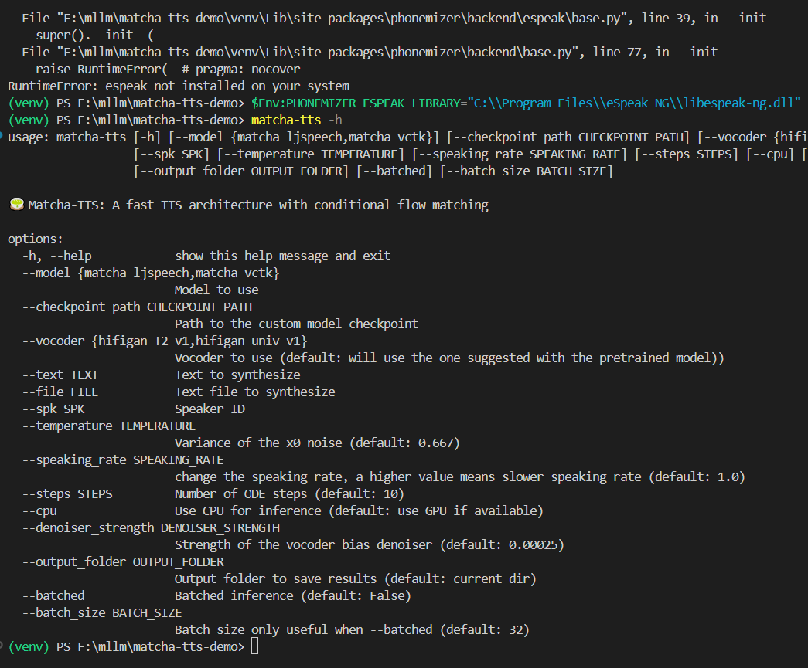
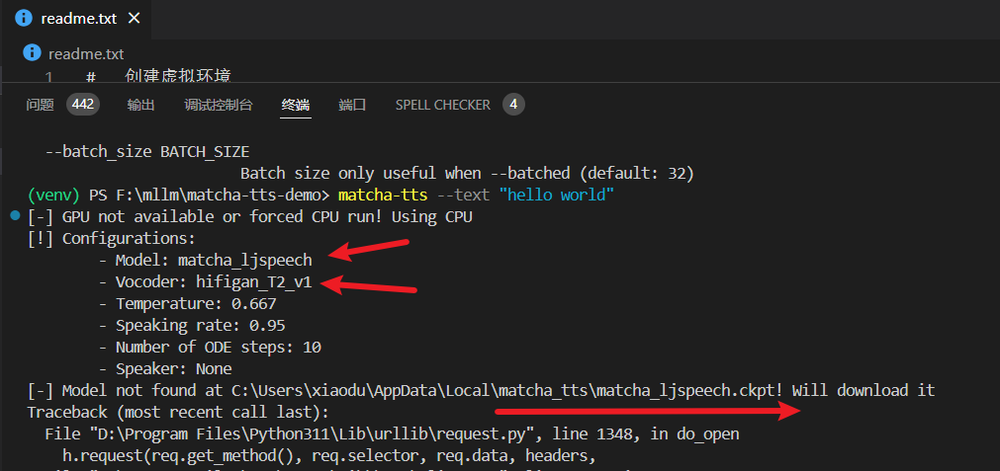
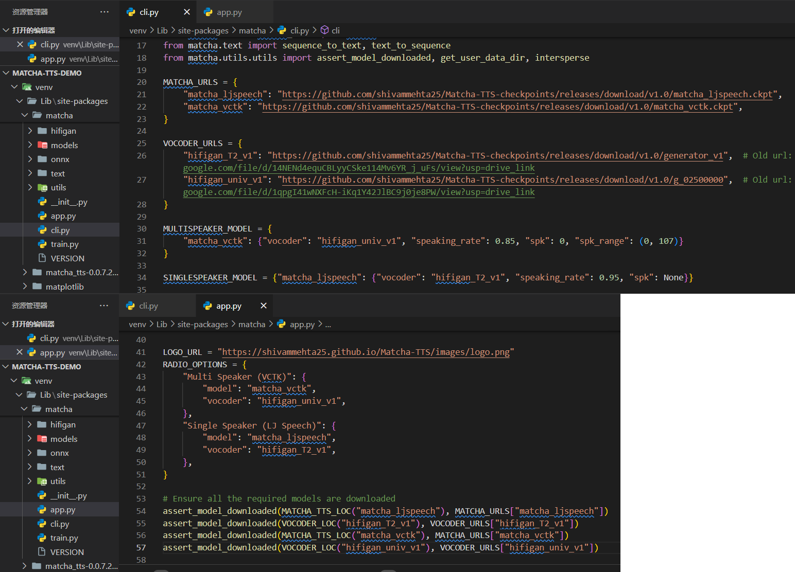
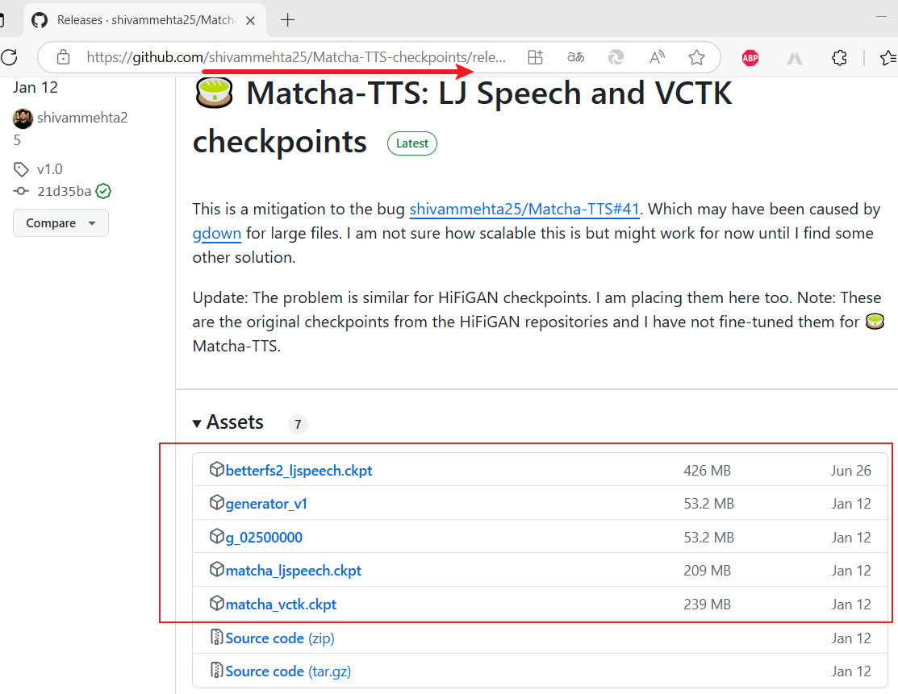
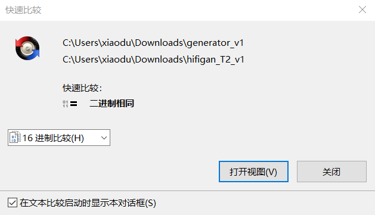
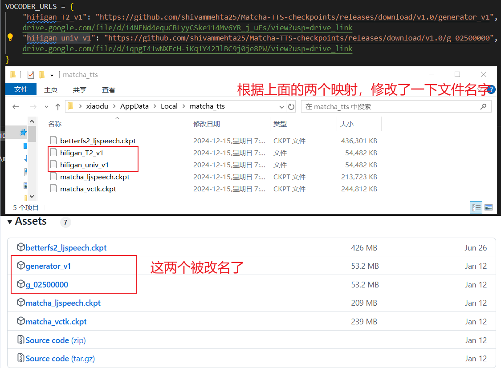
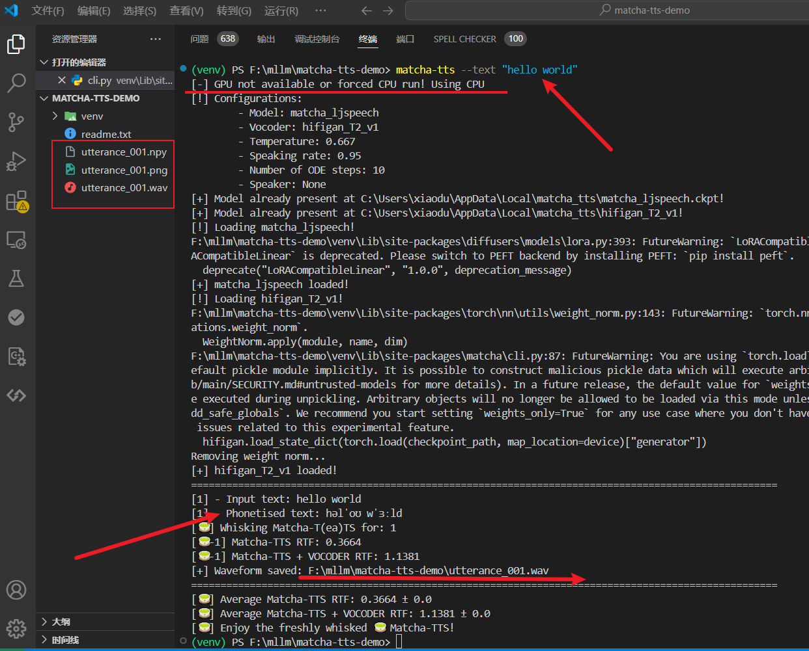

这里新建了一个项目：

安装成功之后，就开始测试了
以来就报错了，都习惯了，这是常态啊！错误如下：

还好这个错误有点熟悉：
# 设置环境变量（根据你的 eSpeak NG 安装路径），注意：这里使用的是 powershell
$Env:PHONEMIZER_ESPEAK_LIBRARY="C:\\Program Files\\eSpeak NG\\libespeak-ng.dll"

到了这里开始尝试文本转语音了，

这个问题说报错不太恰当，因为程序会检测某个路径中是否存在模型文件，如果不存在，则会在 GitHub 上下载……关键就是咱们的 GitHub 不太稳定啊！于是只能先想办法自己搞下来。但是他的下载地址在哪里呢？在代码中全局搜索了一下

从上图中便可以发现，这是一个 GitHub 项目，地址为：shivammehta25/Matcha-TTS-checkpoints: Repository specific for hosting Matcha-TTS's checkpoints in its release. Mitigation due to the bug in gdown，也确实在该项目的 Releases 中找到了该模型，如下图：

不管了，将这上面的几个都搞下来，放到上面代码运行时提示的位置，这里是：
# 代码位置：venv\Lib\site-packages\matcha\cli.py
VOCODER_URLS = {
"hifigan_T2_v1": "https://github.com/shivammehta25/Matcha-TTS-checkpoints/releases/download/v1.0/generator_v1", # Old url: https://drive.google.com/file/d/14NENd4equCBLyyCSke114Mv6YR_j_uFs/view?usp=drive_link
"hifigan_univ_v1": "https://github.com/shivammehta25/Matcha-TTS-checkpoints/releases/download/v1.0/g_02500000", # Old url: https://drive.google.com/file/d/1qpgI41wNXFcH-iKq1Y42JlBC9j0je8PW/view?usp=drive_link
}
# 代码位置：venv\Lib\site-packages\matcha\app.py
assert_model_downloaded(VOCODER_LOC("hifigan_T2_v1"), VOCODER_URLS["hifigan_T2_v1"])
开始是在 Matcha-TTS-checkpoints 上将几个文件都下载下来了并放到了指定的路径，之后又开始测试，发现日志中还是在下载（碰巧了，可以访问 GitHub），最后下载的文件是


弄完了这些之后，赶紧再试一下吧，如下图：

因为才帮助中看到它可以指定一些参数，例如：checkpoint_path、model、spk 等，也看了一下代码，应该可以指定模型路径和模型名称，于是便测试了一下，命令如下：
matcha-tts --checkpoint_path "C:\Users\xiaodu\Downloads" --model matcha_ljspeech --vocoder hifigan_univ_v1 --spk 10000 --text "目光所至皆为华夏，五星闪耀皆为信仰"
结果日志显示还是检查不到模型……😅😅😅。是我没有用对？还是 bug ？不过还是可以支持中文的，标准的老外说中的样子，你可以点击播放试试：